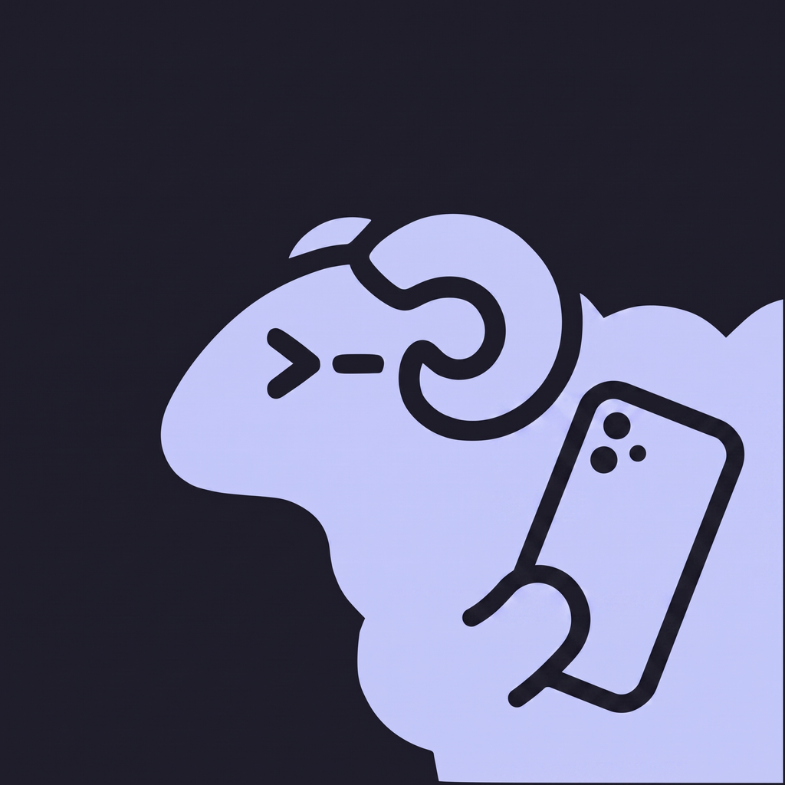
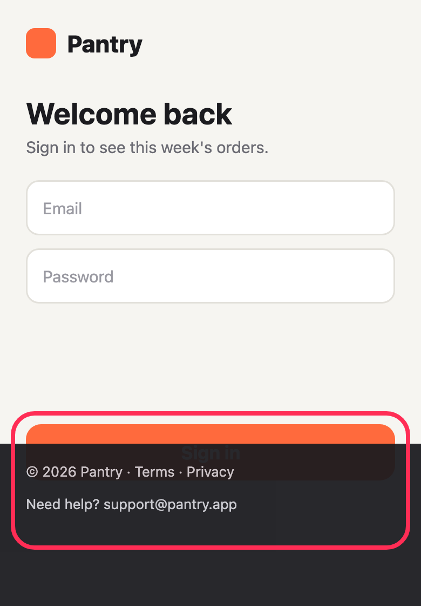

<!doctype html>
<html lang="en">
<head>
<meta charset="utf-8">
<title>HerdrChat store slides</title>
<!--
  The App Store pictures, drawn as a page and rendered by render.sh.

  One file for every slide: ?set=iphone|ipad&n=1..N picks one. The phone and
  iPad screens are real screenshots from the app (raw/), framed here; what is
  drawn in HTML is the frame, the words, and the callouts that repeat a detail
  of the screen at a size a store thumbnail can read. Colours are the site's
  and the app's dark theme, so the store, the site and the app look like one
  thing.
-->
<style>
@font-face { font-family: "Recursive Sans"; src: url("../site/assets/fonts/recursive-sans-v1.woff2") format("woff2"); font-weight: 300 1000; }
@font-face { font-family: "Recursive Mono"; src: url("../site/assets/fonts/recursive-mono-v1.woff2") format("woff2"); font-weight: 300 1000; }

:root {
  --bg: #0e0e14;
  --ink: #f2f2f7;
  --ink-soft: rgba(235, 235, 245, 0.72);
  --muted: rgba(235, 235, 245, 0.5);
  --line: rgba(235, 235, 245, 0.12);
  --wool: #c3c7f9;
  --tint: #8288f0;
  --amber: #ff9f0a;
  --green: #37c98b;
  --card: #1a1b27;
  --sans: "Recursive Sans", -apple-system, system-ui, sans-serif;
  --mono: "Recursive Mono", ui-monospace, Menlo, monospace;
}

* { box-sizing: border-box; margin: 0; padding: 0; }
html, body { background: var(--bg); }
body { font-family: var(--sans); color: var(--ink); -webkit-font-smoothing: antialiased; }

.slide {
  position: relative;
  overflow: hidden;
  background: var(--bg);
}
.iphone-set .slide { width: 1320px; height: 2868px; }
.ipad-set .slide { width: 2752px; height: 2064px; }

/* One soft light per slide, in the colour the slide is about. */
.glow {
  position: absolute;
  border-radius: 50%;
  filter: blur(120px);
  opacity: 0.55;
  pointer-events: none;
}
.grid {
  position: absolute;
  inset: 0;
  background-image:
    linear-gradient(rgba(235, 235, 245, 0.035) 1px, transparent 1px),
    linear-gradient(90deg, rgba(235, 235, 245, 0.035) 1px, transparent 1px);
  background-size: 88px 88px;
  mask-image: radial-gradient(ellipse at 50% 30%, #000 20%, transparent 75%);
}

/* ---------- words ---------- */

.copy { position: absolute; left: 110px; right: 110px; top: 190px; }
.eyebrow {
  display: inline-flex;
  align-items: center;
  gap: 18px;
  font-family: var(--mono);
  font-size: 38px;
  font-weight: 600;
  letter-spacing: 0.02em;
  color: var(--tint);
  margin-bottom: 44px;
}
.eyebrow i { width: 18px; height: 18px; border-radius: 50%; background: currentColor; box-shadow: 0 0 24px currentColor; }
h1 {
  font-size: 132px;
  line-height: 1.02;
  font-weight: 820;
  letter-spacing: -0.028em;
}
h1 .mono { font-family: var(--mono); font-weight: 560; letter-spacing: -0.04em; color: var(--wool); }
h1 .amber { color: var(--amber); }
h1 .green { color: var(--green); }
h1 .tint { color: var(--wool); }
.sub {
  margin-top: 44px;
  font-size: 50px;
  line-height: 1.32;
  font-weight: 420;
  color: var(--ink-soft);
  max-width: 1060px;
}

/* ---------- the phone ---------- */

.phone {
  position: absolute;
  --w: 1000px;
  width: var(--w);
  aspect-ratio: 1320 / 2868;
  border-radius: calc(var(--w) * 0.155);
  padding: calc(var(--w) * 0.028);
  box-sizing: content-box;
  background: linear-gradient(145deg, #4a4b57, #1c1c22 30%, #2b2c34 70%, #54555f);
  box-shadow:
    0 0 0 3px #0a0a0e,
    0 60px 160px rgba(0, 0, 0, 0.7),
    0 0 0 1px rgba(255, 255, 255, 0.06) inset;
}
.phone::before {
  /* The black band between the metal and the glass. */
  content: "";
  position: absolute;
  inset: calc(var(--w) * 0.012);
  border-radius: calc(var(--w) * 0.145);
  background: #000;
}
.phone .screen {
  position: relative;
  width: 100%;
  height: 100%;
  border-radius: calc(var(--w) * 0.128);
  overflow: hidden;
  background: #000;
}
.phone .screen > img { display: block; width: 100%; height: 100%; object-fit: cover; object-position: top; }
.phone .island {
  position: absolute;
  top: calc(var(--w) * 0.028);
  left: 50%;
  width: calc(var(--w) * 0.31);
  height: calc(var(--w) * 0.092);
  transform: translateX(-50%);
  border-radius: 999px;
  background: #000;
}

.ipad {
  position: absolute;
  --w: 2000px;
  width: var(--w);
  aspect-ratio: 2752 / 2064;
  border-radius: calc(var(--w) * 0.05);
  padding: calc(var(--w) * 0.022);
  box-sizing: content-box;
  background: linear-gradient(145deg, #4a4b57, #1c1c22 30%, #2b2c34 70%, #54555f);
  box-shadow: 0 0 0 3px #0a0a0e, 0 80px 200px rgba(0, 0, 0, 0.7);
}
.ipad::before {
  content: "";
  position: absolute;
  inset: calc(var(--w) * 0.008);
  border-radius: calc(var(--w) * 0.044);
  background: #000;
}
.ipad .screen {
  position: relative;
  width: 100%;
  height: 100%;
  border-radius: calc(var(--w) * 0.03);
  overflow: hidden;
}
.ipad .screen > img { display: block; width: 100%; height: 100%; object-fit: cover; }

/* ---------- callouts: a detail of the screen, lifted out and enlarged ---------- */

.float {
  position: absolute;
  border-radius: 44px;
  background: rgba(26, 27, 39, 0.94);
  border: 2px solid var(--line);
  box-shadow: 0 40px 120px rgba(0, 0, 0, 0.65), 0 0 0 1px rgba(0, 0, 0, 0.4);
  backdrop-filter: blur(30px);
}

.legend { padding: 18px 0; width: 620px; }
.legend-row {
  display: flex;
  align-items: center;
  gap: 28px;
  padding: 30px 44px;
  font-size: 46px;
  font-weight: 640;
}
.legend-row + .legend-row { border-top: 2px solid var(--line); }
.legend-row small { margin-left: auto; font-family: var(--mono); font-size: 34px; font-weight: 500; color: var(--muted); }
.dot { width: 26px; height: 26px; border-radius: 50%; flex: none; }
.dot.amber { background: var(--amber); box-shadow: 0 0 28px var(--amber); }
.dot.green { background: var(--green); box-shadow: 0 0 28px var(--green); }
.dot.idle { border: 5px solid var(--muted); }

.ask {
  padding: 48px 48px 40px;
  width: 1100px;
  border-color: rgba(255, 159, 10, 0.45);
  background: rgba(40, 30, 14, 0.96);
}
.ask p { font-size: 44px; line-height: 1.3; font-weight: 640; color: var(--amber); margin-bottom: 34px; }
.opt {
  display: flex;
  align-items: center;
  gap: 30px;
  padding: 30px 36px;
  border-radius: 28px;
  background: rgba(255, 159, 10, 0.13);
  font-size: 46px;
  font-weight: 560;
}
.opt + .opt { margin-top: 20px; }
.opt b { font-family: var(--mono); color: var(--amber); font-weight: 700; }
.opt.on { background: rgba(255, 159, 10, 0.28); box-shadow: 0 0 0 3px rgba(255, 159, 10, 0.7); }
.finger {
  position: absolute;
  width: 120px;
  height: 120px;
  border-radius: 50%;
  background: radial-gradient(circle, rgba(255, 255, 255, 0.55), rgba(255, 255, 255, 0.12) 60%, transparent 70%);
  border: 4px solid rgba(255, 255, 255, 0.6);
}

.shot { padding: 18px; border-radius: 40px; }
.shot img { display: block; width: 520px; border-radius: 26px; }

/* Lock screen, drawn: the notification text is the watcher's own format. */
.lock {
  position: absolute;
  inset: 0;
  background:
    radial-gradient(120% 70% at 20% 10%, #3b3f8f 0%, transparent 60%),
    radial-gradient(100% 60% at 90% 90%, #6b3d12 0%, transparent 60%),
    linear-gradient(180deg, #151632, #0b0b14 70%);
  color: #fff;
  text-align: center;
}
.lock .date { margin-top: 12%; font-size: 52px; font-weight: 560; opacity: 0.85; }
.lock .time { font-size: 260px; font-weight: 700; letter-spacing: -0.03em; line-height: 1; margin-top: 6px; }
.notes { position: absolute; left: 4.5%; right: 4.5%; top: 43%; display: flex; flex-direction: column; gap: 22px; text-align: left; }
.note {
  display: flex;
  gap: 28px;
  padding: 34px 34px 36px;
  border-radius: 52px;
  background: rgba(58, 58, 72, 0.72);
  backdrop-filter: blur(40px);
}
.note img { width: 92px; height: 92px; border-radius: 22px; flex: none; }
.note .t { display: flex; justify-content: space-between; font-size: 38px; font-weight: 700; }
.note .t span { font-weight: 450; opacity: 0.6; }
.note p { font-size: 38px; line-height: 1.3; margin-top: 6px; opacity: 0.95; }
.note.dim { opacity: 0.8; transform: scale(0.97); }

.chips { position: absolute; left: 110px; right: 110px; display: flex; flex-direction: column; gap: 26px; }
.chip {
  display: flex;
  align-items: center;
  gap: 32px;
  padding: 36px 44px;
  border-radius: 40px;
  background: var(--card);
  border: 2px solid var(--line);
  font-size: 46px;
  font-weight: 620;
}
.chip svg { width: 60px; height: 60px; flex: none; color: var(--tint); }
.chip small { display: block; font-size: 36px; font-weight: 420; color: var(--muted); margin-top: 6px; }

/* Terminal window for the first slide: where the question starts. */
.term {
  position: absolute;
  width: 1180px;
  border-radius: 34px;
  background: #0b0c13;
  border: 2px solid var(--line);
  box-shadow: 0 50px 140px rgba(0, 0, 0, 0.7);
  font-family: var(--mono);
  font-size: 34px;
  line-height: 1.45;
  color: #d4d6dd;
  overflow: hidden;
}
.term-bar { display: flex; align-items: center; gap: 14px; padding: 24px 30px; border-bottom: 2px solid var(--line); color: var(--muted); font-size: 28px; }
.term-bar i { width: 20px; height: 20px; border-radius: 50%; background: #ff5f57; }
.term-bar i:nth-child(2) { background: #febc2e; }
.term-bar i:nth-child(3) { background: #28c840; margin-right: 18px; }
.term-body { padding: 30px 36px 36px; }
.term-body .dim { color: rgba(235, 235, 245, 0.42); }
.term-body .g { color: var(--green); }
.term-box { margin-top: 18px; padding: 22px 26px; border: 2px solid rgba(255, 159, 10, 0.6); border-radius: 12px; }
.term-box .a { color: var(--amber); }
</style>
</head>
<body>
<div id="root"></div>
<script>
const params = new URLSearchParams(location.search);
const set = params.get('set') || 'iphone';
const n = Number(params.get('n') || 1);
document.body.className = `${set}-set`;

const phone = (src, style) => `
  <div class="phone" style="${style}">
    <div class="screen">${src.startsWith('<') ? src : ``}<div class="island"></div></div>
  </div>`;

// The corner mark is iPadOS's window-resize handle, not part of the app.
const ipadFrame = (src, style) => `
  <div class="ipad" style="${style}">
    <div class="screen"><span style="position:absolute;right:0;bottom:0;width:4%;height:5%;background:#000"></span></div>
  </div>`;

const icon = {
  lock: '<svg viewBox="0 0 24 24" fill="none" stroke="currentColor" stroke-width="2" stroke-linecap="round" stroke-linejoin="round"><rect x="4" y="10.5" width="16" height="10.5" rx="2.5"/><path d="M8 10.5V7a4 4 0 0 1 8 0v3.5"/></svg>',
  key: '<svg viewBox="0 0 24 24" fill="none" stroke="currentColor" stroke-width="2" stroke-linecap="round" stroke-linejoin="round"><circle cx="8" cy="15" r="4.5"/><path d="m11.5 11.5 8-8M16.5 6.5l2.5 2.5M14 9l2 2"/></svg>',
  pin: '<svg viewBox="0 0 24 24" fill="none" stroke="currentColor" stroke-width="2" stroke-linecap="round" stroke-linejoin="round"><path d="M9 3h6l-1 6 4 3v2H6v-2l4-3z"/><path d="M12 14v7"/></svg>',
  mute: '<svg viewBox="0 0 24 24" fill="none" stroke="currentColor" stroke-width="2" stroke-linecap="round" stroke-linejoin="round"><path d="M6 8a6 6 0 0 1 9.5-4.9M18 11v2l2 3H8"/><path d="M10 20a2 2 0 0 0 4 0"/><path d="M3 3l18 18"/></svg>',
  user: '<svg viewBox="0 0 24 24" fill="none" stroke="currentColor" stroke-width="2" stroke-linecap="round" stroke-linejoin="round"><path d="M3 3l18 18"/><circle cx="12" cy="8" r="3.5"/><path d="M5 20a7 7 0 0 1 11.3-5.5"/></svg>',
};

const iphone = [
  // 1. What it is, in the site's own words: the question starts in the terminal and is answered on the phone.
  () => `
    <div class="glow" style="width:1300px;height:1300px;left:-200px;top:1300px;background:#4b50c8"></div>
    <div class="grid"></div>
    <div class="copy">
      <div class="eyebrow"><i></i>Claude Code · Codex</div>
      <h1><span class="mono">Less terminal.</span><br>More conversation.</h1>
      <p class="sub">The coding agents running on your computer, as chats on your iPhone.</p>
    </div>
    <div class="term" style="left:50px;top:960px;width:860px;transform:rotate(-3deg)">
      <div class="term-bar"><i></i><i></i><i></i>~/code/herdrchat: claude</div>
      <div class="term-body">
        <div><span class="g">●</span> Read(src/lib/herdr/client.ts)</div>
        <div class="dim">  ⎿ Read 214 lines</div>
        <div><span class="g">●</span> Found it. listDirectories</div>
        <div>  appends "; true", so an</div>
        <div>  unreadable path exits 0.</div>
        <div class="term-box"><span class="a">Before I write to client.ts…</span><br><span class="a">❯ 1. Yes, go ahead</span><br>  2. No, tell me more first</div>
      </div>
    </div>
    ${phone('thread.png', '--w:760px;left:500px;top:1320px')}
  `,
  // 2. The list.
  () => `
    <div class="glow" style="width:1100px;height:1100px;right:-300px;top:1500px;background:#a86208"></div>
    <div class="grid"></div>
    <div class="copy">
      <div class="eyebrow" style="color:var(--amber)"><i></i>Needs you</div>
      <h1>The agent that needs you is <span class="amber">on top.</span></h1>
      <p class="sub">Every workspace on your machine is a chat, grouped by what it is doing.</p>
    </div>
    ${phone('chats.png', '--w:960px;left:180px;top:1100px')}
    <div class="float legend" style="right:60px;top:2040px">
      <div class="legend-row"><span class="dot amber"></span>Needs you</div>
      <div class="legend-row"><span class="dot green"></span>Working</div>
      <div class="legend-row"><span class="dot idle"></span>Idle</div>
    </div>
  `,
  // 3. Answering.
  () => `
    <div class="glow" style="width:1200px;height:1200px;left:-300px;top:1700px;background:#8a520a"></div>
    <div class="grid"></div>
    <div class="copy">
      <div class="eyebrow" style="color:var(--amber)"><i></i>Blocked on you</div>
      <h1>Answer it <span class="amber">from anywhere.</span></h1>
      <p class="sub">Pick an option or type a reply. It goes into the real session on your machine.</p>
    </div>
    ${phone('thread.png', '--w:820px;left:250px;top:1000px')}
    <div class="float ask" style="left:110px;top:2250px">
      <p>Before I write to client.ts: this changes what every caller sees on failure. Want me to go ahead?</p>
      <div class="opt on"><b>1</b>Yes, go ahead</div>
      <div class="opt"><b>2</b>No, tell me more first</div>
          </div>
  `,
  // 4. Slash commands.
  () => `
    <div class="glow" style="width:1200px;height:1200px;right:-300px;top:1600px;background:#4b50c8"></div>
    <div class="grid"></div>
    <div class="copy">
      <div class="eyebrow"><i></i>Slash commands</div>
      <h1>Switch the model <span class="tint">from your phone.</span></h1>
      <p class="sub">Type / for /model, /effort and more. The picker opens right in the chat.</p>
    </div>
    ${phone('slash.png', '--w:900px;left:210px;top:980px')}
  `,
  // 5. Notifications.
  () => `
    <div class="glow" style="width:1200px;height:1200px;right:-300px;top:1300px;background:#4b50c8"></div>
    <div class="grid"></div>
    <div class="copy">
      <div class="eyebrow"><i></i>Notifications</div>
      <h1>Know the moment <span class="tint">it is stuck.</span></h1>
      <p class="sub">A buzz when an agent waits for you or finishes. Tap it and you are in that chat.</p>
    </div>
    ${phone(`<div class="lock">
        <div class="date">Monday 28 September</div>
        <div class="time">9:41</div>
        <div class="notes">
          <div class="note"><div style="flex:1"><div class="t">herdrchat · Folder picker errors<span>now</span></div><p>Waiting for you: Before I write to client.ts, this changes what every caller sees on failure. Want me to go ahead?</p></div></div>
          <div class="note dim"><div style="flex:1"><div class="t">notes · Release notes<span>4m ago</span></div><p>Summarised the release notes into three bullets.</p></div></div>
        </div>
      </div>`, '--w:960px;left:180px;top:1100px')}
  `,
  // 6. Pictures.
  () => `
    <div class="glow" style="width:1200px;height:1200px;left:-200px;top:1500px;background:#1f7a55"></div>
    <div class="grid"></div>
    <div class="copy">
      <div class="eyebrow" style="color:var(--green)"><i></i>Pictures</div>
      <h1>Show it <span class="green">what you see.</span></h1>
      <p class="sub">Send a screenshot with your message. It lands on your machine, in the prompt.</p>
    </div>
    ${phone('picture.png', '--w:780px;left:470px;top:1080px')}
    <div class="float shot" style="left:60px;top:1290px;transform:rotate(-5deg)"></div>
  `,
  // 7. Pin and mute.
  () => `
    <div class="glow" style="width:1100px;height:1100px;left:-300px;top:1400px;background:#a86208"></div>
    <div class="grid"></div>
    <div class="copy">
      <div class="eyebrow" style="color:var(--amber)"><i></i>Pin &amp; mute</div>
      <h1>Pin what matters. <span class="amber">Quiet the rest.</span></h1>
      <p class="sub">Swipe a chat to keep it on top, or to turn off its notifications.</p>
    </div>
    ${phone('pinned.png', '--w:960px;left:180px;top:1100px')}
    <div class="chips" style="top:2560px;flex-direction:row;gap:24px">
      <div class="chip" style="flex:1">${icon.pin}<div>Pinned<br>to the top</div></div>
      <div class="chip" style="flex:1">${icon.mute}<div>Muted<br>per chat</div></div>
    </div>
  `,
  // 8. Privacy.
  () => `
    <div class="glow" style="width:1300px;height:1300px;left:0;top:900px;background:#3a3e9a"></div>
    <div class="grid"></div>
    <div class="copy">
      <div class="eyebrow"><i></i>Private by design</div>
      <h1>Your machine.<br><span class="tint">Your keys.</span></h1>
      <p class="sub">The app talks straight to your computer over SSH. Nothing to sign up for.</p>
    </div>
    ${phone('host.png', '--w:700px;left:310px;top:950px')}
    <div class="chips" style="top:2560px;flex-direction:row;gap:24px">
      <div class="chip" style="flex:1">${icon.lock}<div>SSH over<br>Tailscale</div></div>
      <div class="chip" style="flex:1">${icon.key}<div>Keys in the<br>Keychain</div></div>
    </div>
  `,
];

const ipad = [
  () => `
    <div class="glow" style="width:1700px;height:1700px;left:900px;top:500px;background:#4b50c8"></div>
    <div class="grid"></div>
    <div class="copy" style="top:150px;left:180px;right:180px">
      <h1 style="font-size:128px"><span class="mono">Less terminal.</span> More conversation.</h1>
      <p class="sub" style="max-width:none">Every agent on one side, the conversation on the other.</p>
    </div>
    ${ipadFrame('ipad-thread.png', '--w:2200px;left:240px;top:640px')}
  `,
  () => `
    <div class="glow" style="width:1700px;height:1700px;left:200px;top:600px;background:#1f7a55"></div>
    <div class="grid"></div>
    <div class="copy" style="top:150px;left:180px;right:180px">
      <h1 style="font-size:128px">Show it <span class="green">what you see.</span></h1>
      <p class="sub" style="max-width:none">Send a screenshot with your message. It lands on your machine, in the prompt.</p>
    </div>
    ${ipadFrame('ipad-picture.png', '--w:2200px;left:240px;top:640px')}
  `,
];

const slides = set === 'ipad' ? ipad : iphone;
document.getElementById('root').innerHTML = `<div class="slide">${slides[n - 1]()}</div>`;
document.title = `${set}-${n}`;
</script>
</body>
</html>
